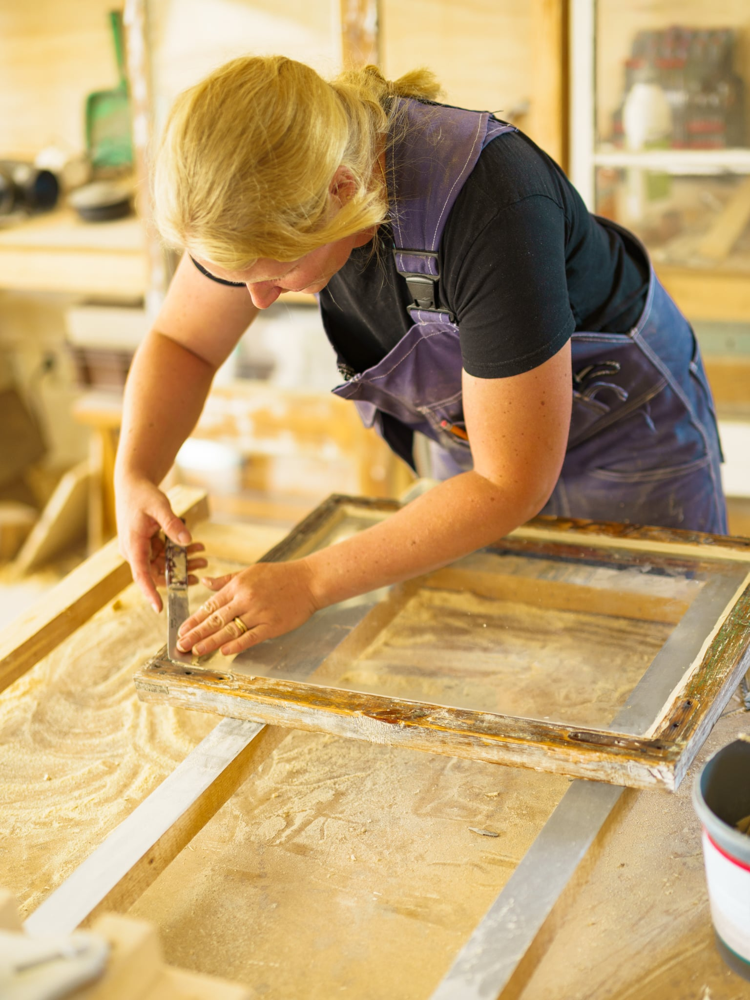
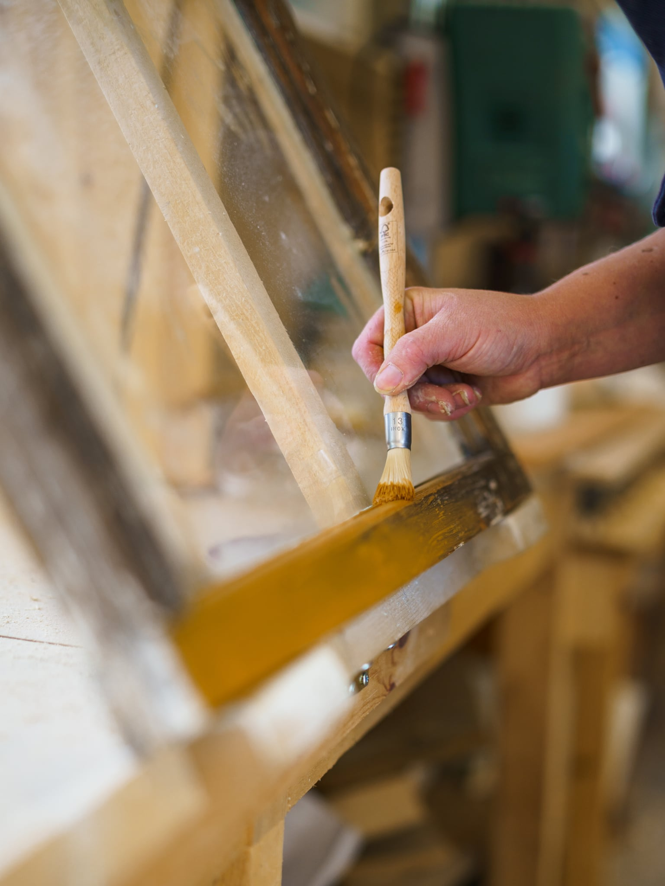
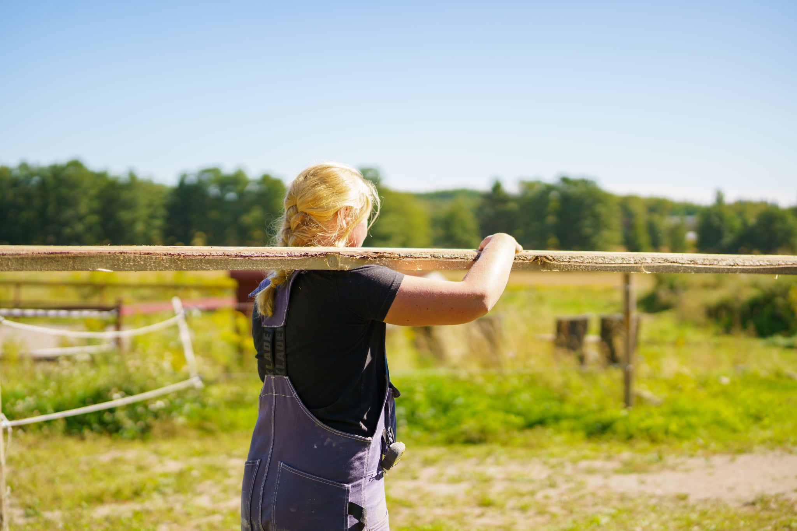
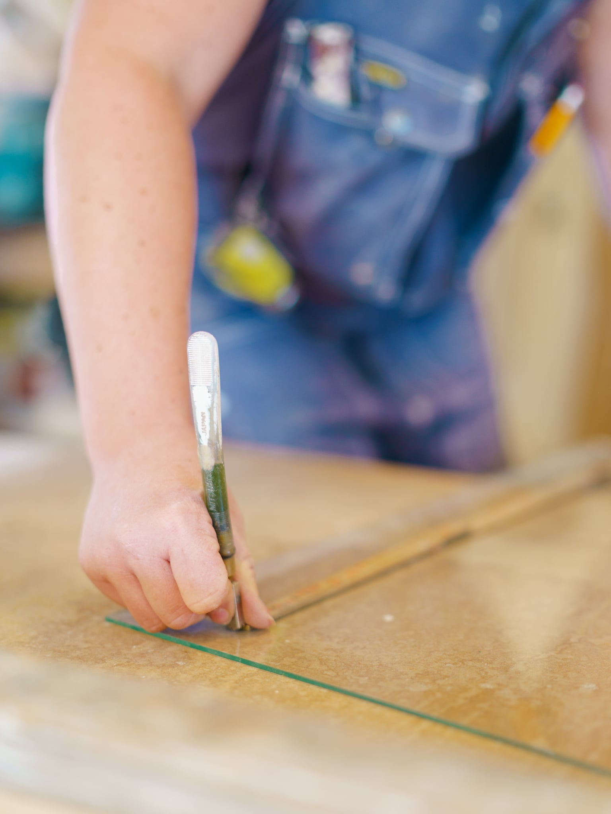
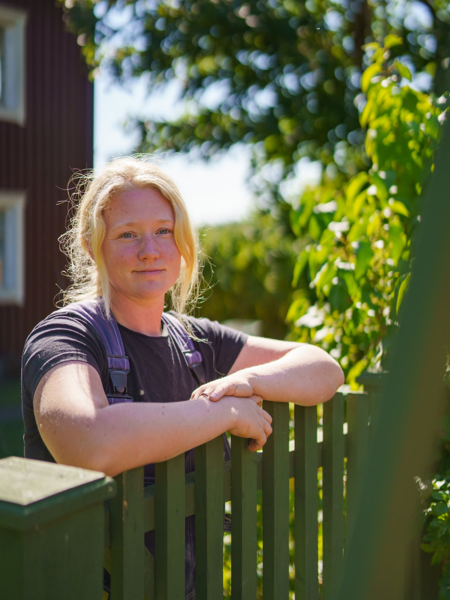

Gamla bågar får nytt liv
Jag lagade träet på de gamla fönsterbågarna och strök dem med kokt linolja. Sedan var de redo för glas, kitt och färg.
Se trälagningarna på Instagram
Byggnadsvård i Värmland
Fönsterrenovering och traditionellt snickeri för hus med historia.
Se arbetetUtvalda arbeten
Ett gammalt fönster kan ofta lagas. När en ny båge behövs går det att bygga en som passar huset.


Jag lagade träet på de gamla fönsterbågarna och strök dem med kokt linolja. Sedan var de redo för glas, kitt och färg.
Se trälagningarna på Instagram
När jag byggde de här bågarna växlade jag mellan maskiner och handarbete. När snickeriet var klart återstod glas och färg.
Se hur jag bygger en fönsterbågeUppdrag
Jag arbetar med äldre tekniker och material för att bevara husets karaktär och få det att fungera i vardagen.
Berätta om ditt projekt
Om mig
Jag heter Erika och driver Hantverkstan på Heden i Kristinehamn. Jag är snickare med yrkesbevis och utbildar mig inom byggnadsvård.
Jag börjar gärna med att se vad som går att laga och behålla. När något behöver bytas får husets ursprung och själ vägleda mig, från valet av virke till den sista strykningen.
Kontakt
Berätta gärna vad du vill ha hjälp med, var huset ligger och skicka några bilder om du har. Första mötet och offerten är kostnadsfria.